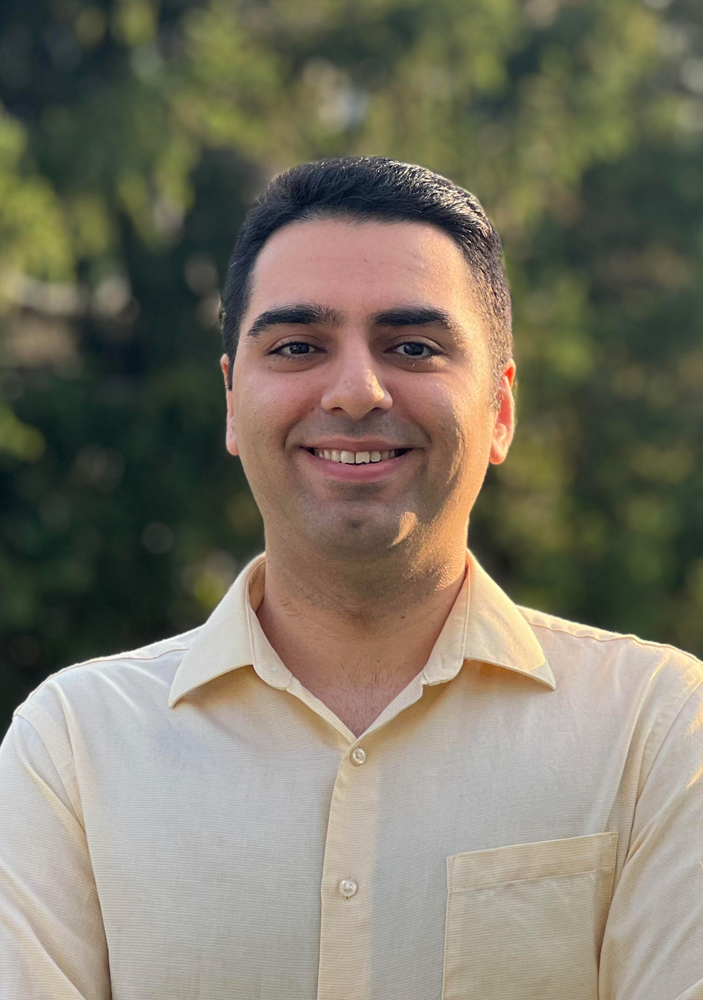

Research Interests
- Scientific Machine Learning
- Artificial Intelligence for Scientific Discovery
- Uncertainty Quantification
- Active Learning and Autonomous Discovery
- Materials Informatics
About Me
|
 |
Ali K. Shargh
Latrobe Hall 229 |
I am an AI/ML Research Scientist developing scientific machine learning, uncertainty-aware AI, and autonomous discovery frameworks for scientific and engineering applications. My research focuses on probabilistic machine learning, active learning, generative modeling, and data-driven decision making.
At Johns Hopkins University, I develop AI-driven frameworks for materials discovery and autonomous experimentation, including uncertainty-aware phase prediction models, active-learning systems, and closed-loop discovery workflows. My work has leveraged datasets containing more than 480,000 CALPHAD-labeled material states and explored design spaces exceeding 12 million alloy compositions. This effort is toward establishing a closed-loop automated laboratory (CAIMEE) aimed at accelerating the discovery of novel refractory multi-principal element alloys (RMPEAs) for extreme environments.
Education
Ph.D. in Mechanical Engineering (2023), University of Rochester, USA
M.S. in Mechanical Engineering (2017), Sharif University of Technology, Iran
B.S. in Mechanical Engineering (2014), K. N. Toosi University of Technology, Iran